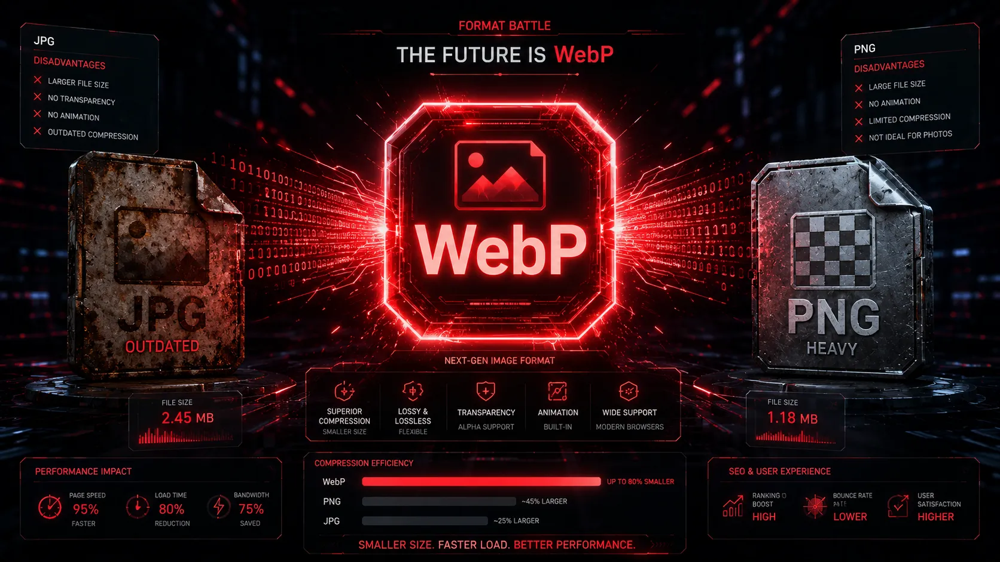
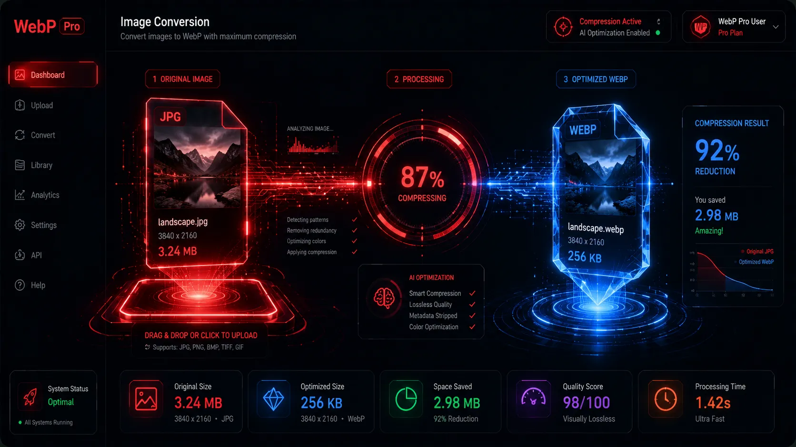
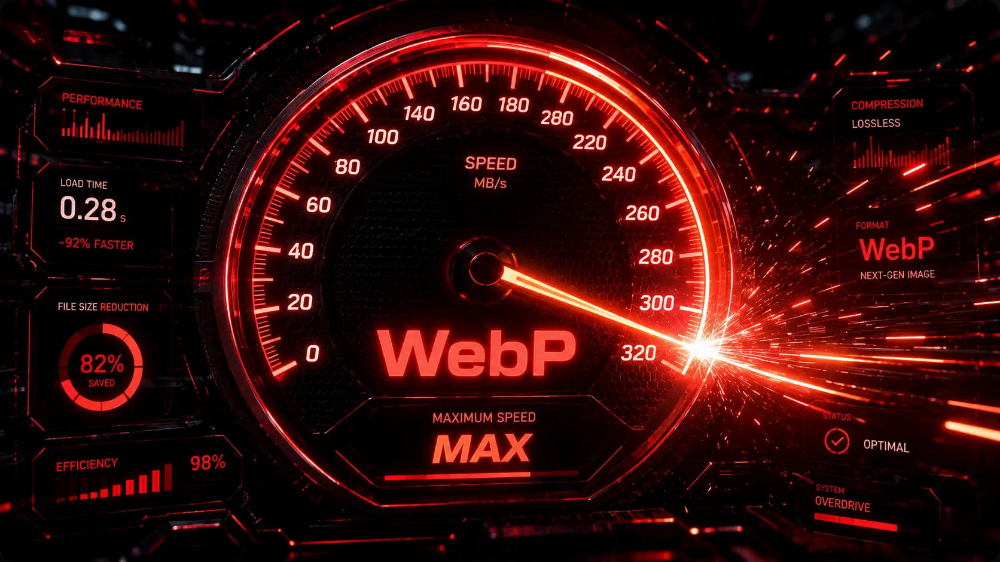
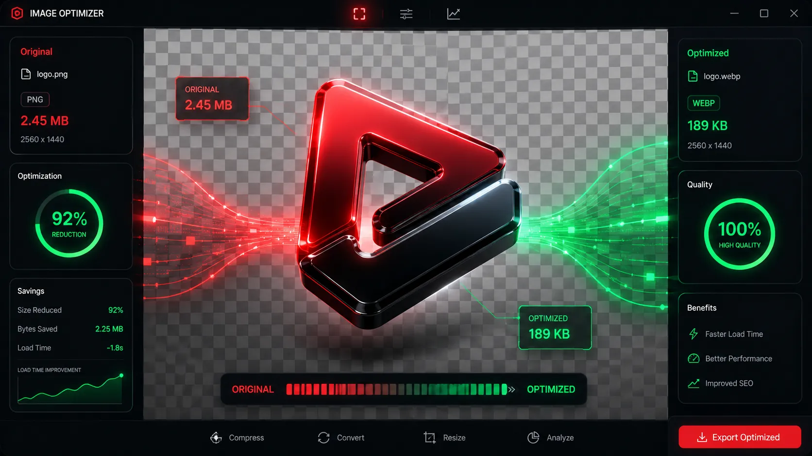
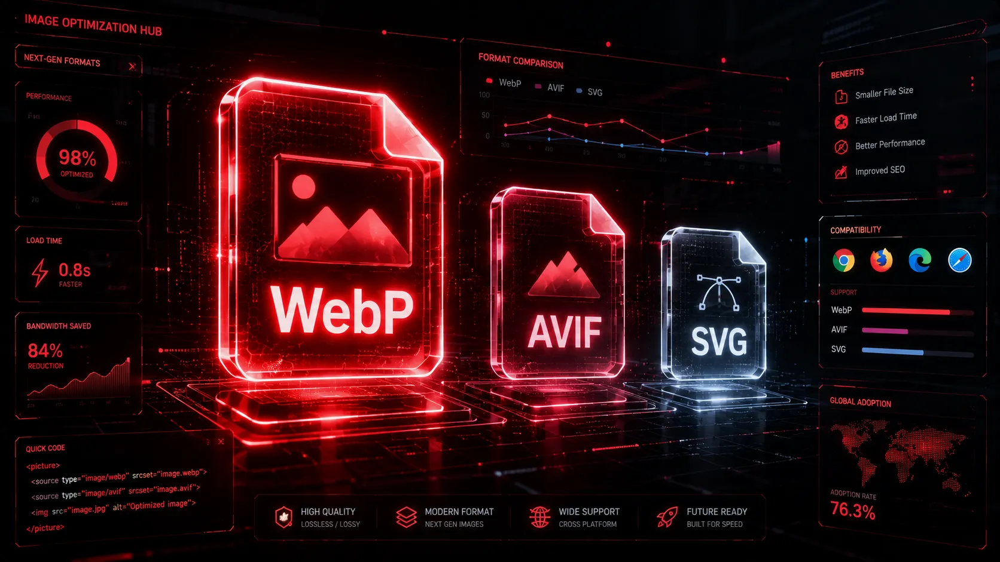

What is WebP Format and Why Should You Use It?
Dive deep into Google's revolutionary image format. Learn how predictive coding allows WebP to crush file sizes while maintaining stunning visual clarity.
Read Full GuideMaster image optimization. Discover expert strategies to compress images, boost your SEO rankings, and accelerate your website load speed without losing quality.
Dive deep into Google's revolutionary image format. Learn how predictive coding allows WebP to crush file sizes while maintaining stunning visual clarity.
Read Full Guide
Format ComparisonA comprehensive, technical breakdown of the world's top image formats. Stop guessing and find out exactly when and where to use each file type for maximum performance.
Read Full Guide
Step-by-Step TutorialFollow our easy, secure method to instantly transform your heavy images into lightweight WebP formats using the Webp Moder client-side processing tool.
Read Full Guide
Web PerformanceUnderstand the critical relationship between payload size and loading speed. Learn how WebP directly influences your Core Web Vitals and LCP scores.
Read Full GuideDiscover why client-side, browser-based tools offer the ultimate privacy, instant speed, and superior compression quality compared to outdated cloud converters.
Read Full GuideMaster the art of image compression. Learn the exact step-by-step process to drastically reduce your image file sizes using format changing and proper dimension resizing.
Read Full GuideDiscover exactly how integrating WebP images directly impacts your Google Core Web Vitals, organic search rankings, and overall technical SEO performance.
Read Full GuideBeyond just using WebP, learn the complete master strategy for optimizing web images, including lazy loading, responsive HTML markup, and CDNs.
Read Full Guide
Format TutorialLearn exactly how to safely convert your transparent PNG images to WebP format to save massive bandwidth while keeping your backgrounds fully transparent.
Read Full Guide
Future TechExplore the modern web image landscape. Learn the differences between WebP, AVIF, and SVG, and discover which formats you should use for your projects.
Read Full Guide